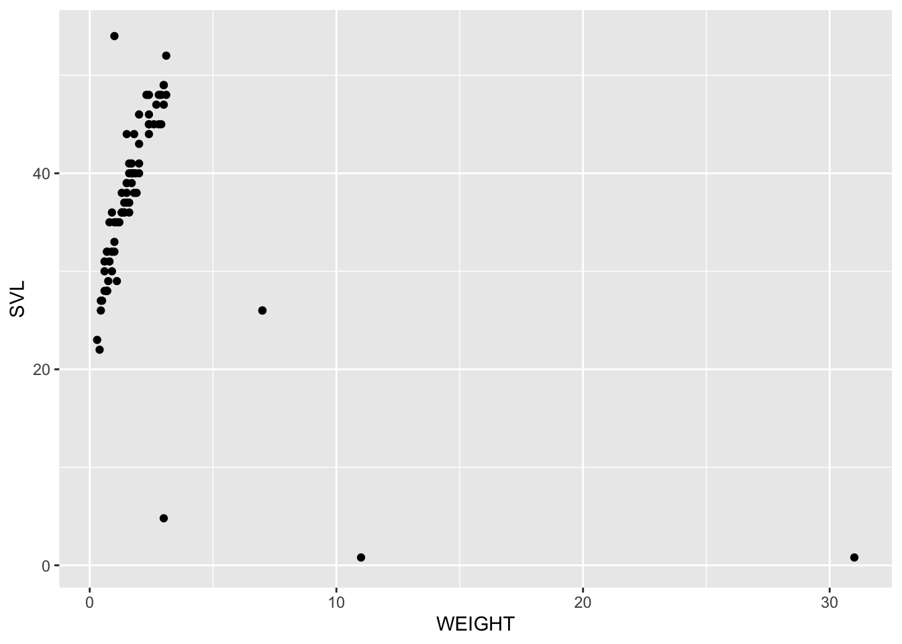
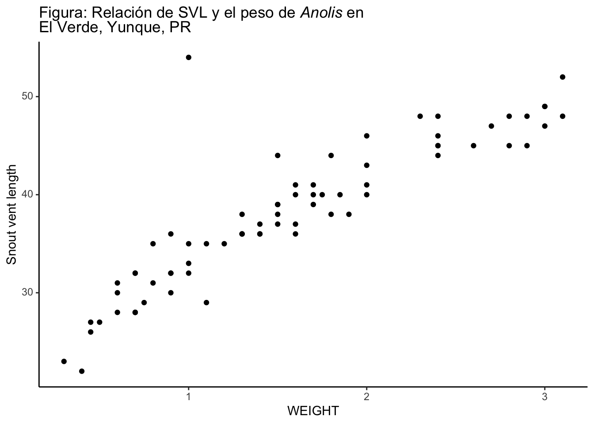
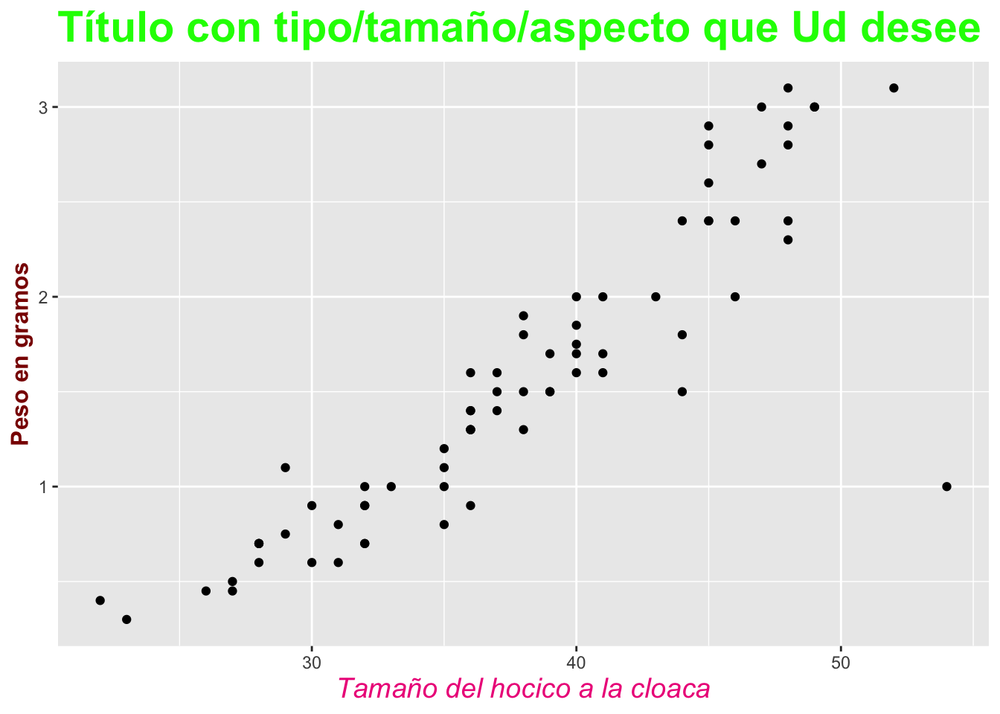

Gráficos para conteos
Fecha de la ultima revisión
[1] "2023-01-23"

Gráficos con geom_point y geom_count
La función geom_point se utiliza para hacer gráficos con los datos en forma de puntitos. La función geom_count hace lo mismo, pero da más flexibilidad en la representación de los puntitos. Con esos gráficos, típicamente tenemos información en los ejes de X y de Y, de manera que esas funciones proyectan los datos distribuidos en ambos ejes.
Comenzaremos la demostración de geom_point primero y luego la de geom_count. Así podremos apreciar mejor las ventajas de utilizar el gráfico geom_count.
# preparar las librerías primero:
library(ggversa) # la función "library" activa el packete de **ggversa** donde se encuentra los archivos
library(ggplot2) # ggplot2 es la librería que se usará para graficar los datos
library(tidyverse) # una serie de paquetes para organizar y visualizar los datos
library(gt) # para que las tablas se vean más organizadas
#devtools::install_github("EvaMaeRey/flipbookr")
library(flipbookr) Para visualizar gráficos con geom_point y geom_count, utilizaremos los datos que se encuentran en el archivo Anolis en el paquete ggversa. Aquí se muestran las primeras seis filas del archivo.
Enlaces para tener información de como cambiar la fechas.
https://www.r-bloggers.com/date-formats-in-r/
https://www.stat.berkeley.edu/~s133/dates.html
Convertir fechas
Como convertir fechas a un formato que reconoce que son fechas.
h=head(Anolis) # la función *head* es para visualizar las primeros 6 filas
#h
h$DATE=as.Date(h$DATE, "%m/%d/%y") # convertir la columna de fecha de tipo *carácter* a tipo *fecha*
h# A tibble: 6 × 15
STUDY Surve…¹ LOCAT…² TIME DATE SEASON SPECIES SEX_AGE HEIGHT DISTA…³
<chr> <chr> <chr> <tim> <date> <chr> <chr> <chr> <dbl> <dbl>
1 Mark/r… North … El Ver… 10:46 1992-03-13 dry Anolis… Female 0 2.7
2 Mark/r… Woods … El Ver… 10:15 1989-02-20 dry Anolis… Juvenil 0 2
3 Mark/r… Woods … El Ver… 11:15 1989-02-21 dry Anolis… Male 0 1.4
4 Mark/r… North … El Ver… 11:06 1992-03-16 dry Anolis… Juvenil 0.3 1
5 Mark/r… North … El Ver… 12:31 1992-03-11 dry Anolis… Male 0.3 0.9
6 Mark/r… North … El Ver… 01:00 1992-03-09 dry Anolis… Female 0.4 0.9
# … with 5 more variables: PERCH_SUBSTRATE <chr>, PERCH_DIAMETER <int>,
# WEIGHT <dbl>, SVL <dbl>, TAIL <dbl>, and abbreviated variable names
# ¹Survey_Site, ²LOCATION, ³DISTANCE_FROM_CENTERLINELas funciones para formatear la tabla son del paquete gt = graphics of table
h%>%
gt() %>%
tab_header(
title = md("Datos lagartija *Anolis* de Puerto Rico"))%>%
tab_options(
column_labels.font.size = px(10),
table.font.size = px(10))%>%
tab_style(
style = cell_text(style = "italic"),
locations = cells_body(
columns = c(SPECIES)
))%>%
fmt_date(
columns = c(DATE),
date_style = 8
)| Datos lagartija Anolis de Puerto Rico | ||||||||||||||
| STUDY | Survey_Site | LOCATION | TIME | DATE | SEASON | SPECIES | SEX_AGE | HEIGHT | DISTANCE_FROM_CENTERLINE | PERCH_SUBSTRATE | PERCH_DIAMETER | WEIGHT | SVL | TAIL |
|---|---|---|---|---|---|---|---|---|---|---|---|---|---|---|
| Mark/recap | North Tower | El Verde | 10:46:00 | 13 March 1992 | dry | Anolis stratulus | Female | 0.0 | 2.7 | ground | 6 | NA | NA | NA |
| Mark/recap | Woods walkway tower | El Verde | 10:15:00 | 20 February 1989 | dry | Anolis stratulus | Juvenil | 0.0 | 2.0 | NA | NA | NA | 29 | NA |
| Mark/recap | Woods walkway tower | El Verde | 11:15:00 | 21 February 1989 | dry | Anolis stratulus | Male | 0.0 | 1.4 | on root at base | 0 | NA | NA | NA |
| Mark/recap | North Tower | El Verde | 11:06:00 | 16 March 1992 | dry | Anolis stratulus | Juvenil | 0.3 | 1.0 | tower | 30 | 7.0 | 26 | 3 |
| Mark/recap | North Tower | El Verde | 12:31:00 | 11 March 1992 | dry | Anolis stratulus | Male | 0.3 | 0.9 | tower | 5 | 2.4 | 45 | 71 |
| Mark/recap | North Tower | El Verde | 01:00:00 | 9 March 1992 | dry | Anolis stratulus | Female | 0.4 | 0.9 | tower | 5 | 1.6 | 37 | 58 |
Creación de subgrupos con select() y filter()
Antes de comenzar la demostración, vamos a preparar los datos. Se usará un subgrupo de los datos de unas de las especies de Anolis, el pequeño lagartijo que es nativo de Puerto Rico. Primero se visualizan las primeras 7 filas del archivo con las dos variables de interés. Específicamente, utilizaremos los datos de los lagartijos con individuos que tienen entre 4 cm y 20 cm de largo. El primer paso es seleccionar las columnas de interés usando la función select( ). El segundo paso es filtrar los datos con la opción filter para solo obtener los Anolis que tienen un peso menor de 4 cm y un SVL mayor a 20 cm.
En el primer paso se muestran las filas del 1 al 7 usando head( ) y se seleccionan las columnas de peso, WEIGHT, de los lagartijos con valor menor de 4 y tamaño SVL mayor a 20. Note que se utiliza & para indicar que cada fila tiene que cumplir con ambas condiciones; o sea, el lagartijo tiene que tener un peso menor de 4 cm y un tamaño mayor de 20 cm (de la cloaca al hocico). Si una de las dos condiciones no se cumple, no se incluirá ese espécimen en particular, de tal manera que obtendremos un archivo más reducido.
Anolis %>% # pipe
select(WEIGHT, SVL) %>%
dplyr::filter(WEIGHT<4 & SVL>20) %>%
head()# A tibble: 6 × 2
WEIGHT SVL
<dbl> <dbl>
1 2.4 45
2 1.6 37
3 1.4 36
4 2 43
5 1.8 38
6 1.1 35Paso a Paso
- seleccionar los datos y crear una tabla
Gráfico geom_point
A continuación, en la Figura. Gráfico básico con geom_point, se muestra un gráfico básico. Como se puede apreciar, los puntos son negros y de un tamaño específico, y los nombres de los ejes de X y Y son los nombres de las columnas tal como aparecen en el archivo de datos.
ggplot(Anolis, aes(WEIGHT, SVL))+
geom_point()
Anolis %>%
select(WEIGHT, SVL) %>%
filter(WEIGHT<4 & SVL>20) %>%
ggplot(aes(x=WEIGHT, y=SVL))+
geom_point()+
labs(title= "Figura. Relación de SVL y el peso de Anolis en \n El Verde, Yunque, PR")+
ylab("Snout vent length")
Paso a Paso
- Mi primera gráfica
Añadir detalles al gráfico
Al gráfico anterior se le pueden hacer modificaciones a los nombres de los ejes, y el estilo y tamaño de las letras. Se cambia el nombre de las variables con xlab y ylab. El tamaño y estilo de las letras de las variables se cambian a itálicas y color rojo con theme(axis.title=element_text(size=10,face=“italic”, colour=“red”). Además, se le puede añadir un título verde y en negrilla con ggtitle(“Nuevo título con tipo/tamaño/aspecto que Ud desee”), y el tamaño y estilo del título con theme(title=element_text(size=20,face=“bold”, colour=“green”)), tal como se muestra en el gráfico siguiente.
Anolis %>%
select(WEIGHT, SVL)%>%
filter(WEIGHT<4 & SVL>20)%>%
ggplot(aes(SVL, WEIGHT))+
geom_point()+
ylab("Peso en gramos")+
xlab("Tamaño del hocico a la cloaca")+
theme(axis.title.x= # Cambiar el titulo del eje de x
element_text(size=10,face="italic",
colour="deeppink2"),
axis.title.y= # Cambiar el titulo del eje de y
element_text(size=10,
face="bold",
colour="darkred"),
title= # Poner un titulo al gráfico
element_text(size=18,
face="bold",
colour="green"))+
ggtitle("Título con tipo/tamaño/aspecto que Ud desee")
Paso a Paso
- Añadiendo detalles
En este último gráfico tenemos la peculiaridad que hay múltiples lagartijas con el mismo peso y tamaño, por lo que los puntos quedarán solapados. A consecuencia de esto, uno no necesariamente va a poder apreciar la frecuencia de los datos. Más adelante se demostrará cómo resolver ese problema.
Gráfico geom_count
Por otro lado, la función geom_count varía el tamaño de los puntos de acuerdo a como varía la frecuencia de una variable. Esta función es una extensión de geom_point. Con geom_count veremos que la diferencia es que ahora el tamaño de los puntos está relacionado a su frecuencia en el archivo de datos. El tamaño de cada punto representa la frecuencia o valores de la cantidad de lagartijas; o sea, los puntos más grandes representan especímenes que son más comunes. Esto se demuestra en la Figura: Puntos de acuerdo a la frecuencia a continuación:
Primero miramos los datos para entender que es los que la gráfica se construye.
Calculamos la frecuencia de cada par de valores. ¿Cuantos lagartijas hay en cada combinación de Peso y SVL? Y posteriormente uno puede evaluar y gráficar la frecuencia de los datos.
Anolis %>% # pipe
select(WEIGHT, SVL) %>% # selecciona
filter(WEIGHT<4) %>%
filter(SVL>20) %>%
count(WEIGHT, SVL)# A tibble: 62 × 3
WEIGHT SVL n
<dbl> <dbl> <int>
1 0.3 23 1
2 0.4 22 1
3 0.45 26 1
4 0.45 27 1
5 0.5 27 1
6 0.6 28 1
7 0.6 30 1
8 0.6 31 1
9 0.7 28 3
10 0.7 32 2
# … with 52 more rowsAnolis %>%
select(WEIGHT, SVL)%>%
filter(WEIGHT<4 & SVL>20)%>%
ggplot(aes(SVL, WEIGHT))+
geom_count()+
ylab("Peso en gramos")+
xlab("Tamaño del hocico a la cloaca")+
theme(axis.title=element_text(size=14,face="bold"))+
labs(title="Figura. Puntos de acuerdo a la frecuencia")Paso a Paso
- Tamaño del punto basado en su frecuencia
Tamaño de puntos proporcional a frecuencia
Se puede representar la frecuencia en proporción a los datos. En el gráfico siguiente, Figura. Puntos en proporción a la frecuencia, los tamaños de los puntos están proporcionales a su frecuencia. Note que hay que añadir (size=..prop.. y group=1) en la función geom_count(). Note que en este caso la suma de todas las frecuencias es 1. Tengamos en cuenta que en la figura anterior los puntos representan la frecuencia. Pero, ahora, los puntos salen en proporción a la frecuencia. La frecuencia en este caso es calculada utilizando como denominador la cantidad total de todos los especímenes en el archivo.
Anolis %>%
select(WEIGHT, SVL)%>%
filter(WEIGHT<4 & SVL>20)%>%
ggplot(aes(SVL, WEIGHT))+
geom_count(aes(size=..prop.., group=1))+
ylab("Peso en gramos")+
xlab("Tamaño del hocico a la cloaca")+
theme(axis.title=element_text(size=10,face="bold"))+
labs(title="Figura. Puntos en proporción a la frecuencia")Paso a Paso
- Tamaño del punto basado en su proporción
Tamaño de puntos proporcional a una variable
En el siguiente gráfico, Puntos en proporción a una variable, las variable WEIGHT, o peso de las lagartijas, se usa para que la suma de la proporción equivalga a 1. Entonces aquí cada grupo en “Y” suma 1. Note que los grupos se forman a base del tamaño del hocico a la cloaca (SVL) utilizando geom_count(aes(size=..prop.., group=SVL)). Por ejemplo, en los Anolis que tienen el tamaño de 35 hay 4 puntos cada uno con valor 0.25, lo que da una suma de 1 (hay 4 cuatro lagartijas que tienen un SVL de 35cm). Note que la frecuencia en este caso es calculada utilizando como denominador la cantidad total de los valores que corresponden a un valor específico en “X”.
x=c(1,2,3,5,9,15)
sum(x)[1] 351/35[1] 0.0285714315/35[1] 0.4285714Anolis %>%
select(WEIGHT, SVL)%>%
filter(WEIGHT<4 & SVL>20)%>%
ggplot(aes(SVL, WEIGHT))+
geom_count(aes(size=..prop.., group=SVL))+
ylab("Peso en gramos")+
xlab("Tamaño del hocico a la cloaca")+
theme(axis.title=element_text(size=14,face="bold"))+
labs(title="Figura. Puntos en proporción a una variable")Paso a Paso
- Tamaño del punto basado en su frecuencia
Grupos separados por color
Si hay más de un grupo (digamos, muestras tomadas en la época seca del año y las tomadas en la época lluviosa), se puede mostrar la proporción basada en los grupos/factores usando la función colour o color. En el gráfico Figura. Grupos con diferentes colores, vemos el efecto de usar el color. Del patrón obtenido se puede observar que la mayoría de los Anolis pequeños se observa en el periodo lluvioso y los grandes en el periodo seco. Note que aquí se añade la variable que queremos separada por color; o sea, se identifica la estación de tiempo seco o húmedo con la columna Season.
unique(Anolis$SEASON)[1] "dry" "wet"names(Anolis) [1] "STUDY" "Survey_Site"
[3] "LOCATION" "TIME"
[5] "DATE" "SEASON"
[7] "SPECIES" "SEX_AGE"
[9] "HEIGHT" "DISTANCE_FROM_CENTERLINE"
[11] "PERCH_SUBSTRATE" "PERCH_DIAMETER"
[13] "WEIGHT" "SVL"
[15] "TAIL" Anolis %>%
select(WEIGHT, SVL, SEX_AGE)%>%
filter(WEIGHT<4 & SVL>20) %>%
ggplot(aes(SVL, WEIGHT, colour=SEX_AGE))+
geom_count(aes(size=..prop.., group=WEIGHT))+
ylab("Peso en gramos")+
xlab("Tamaño del hocico a la cloaca")+
theme(axis.title=element_text(size=10,face="bold"))+
labs(title="Figura. Grupos con diferentes colores")
Grupos separados por variable discreta
En la siguiente demostración, Figura. Grupos separados por variable discreta, se representan dos gráficos separados de acuerdo al sitio de muestreo usando facet_wrap y al añadir en aes(, group=la variable). Aquí se observa que el muestreo en la localidad llamada Torre Sur se hizo solamente en el periodo lluvioso. Note que para crear los dos gráficos separados por una variable discreta se usa facet_wrap con una tilde, “~”, seguido del nombre de la variable, que en este caso es la localidad de muestreo, Survey_Site. (facet_wrap se explica en detalle como un tópico aparte de visualización.)
#names(Anolis) # para mostrar los nombres de las columnas
Anolis %>%
select(WEIGHT, SVL, SEASON, Survey_Site, PERCH_SUBSTRATE)%>%
filter(WEIGHT<4 & SVL>20)%>%
ggplot(aes(SVL, WEIGHT, colour=SEASON))+
geom_count(aes(size=..prop.., group=WEIGHT))+
ylab("Peso en gramos")+
xlab("Tamaño del hocico a la cloaca")+
facet_wrap(~PERCH_SUBSTRATE)+
theme(axis.title=element_text(size=10,face="bold"))+
scale_color_manual(values = c("orange", "red"))+
labs(title="Figura. Grupos separados por variable discreta")Paso a Paso
- Grupos seperados por variable discreta
Cambiar la forma de los puntos
La opción de shape es para modificar los tipos de símbolo disponibles para representar los puntos. Los símbolos se escogen indicando un número del 0 al 25. En el gráfico siguiente, Figura. Cambio en la forma de los puntos, se cambia la forma de los puntos con esta opción y el número de símbolo 12. El símbolo típicamente utilizado en los gráficos de ggplot2 es el 16 (un punto). Cabe mencionar que solamente los números 21 al 25 son símbolos rellenados con color, lo que se hace al utilizar la opción de fill e indicando el color deseado, tal como se muestra en la Figura. Puntos rellenados en amarillo.
Anolis %>%
select(WEIGHT, SVL, SEASON, Survey_Site)%>%
filter(WEIGHT<4 & SVL>20)%>%
ggplot(aes(SVL, WEIGHT, colour=SEASON))+
geom_count(shape=12,colour="red",
aes(size=..prop.., group=Survey_Site))+
ylab("Peso en gramos")+
xlab("Tamaño del hocico a la cloaca")+
facet_wrap(~Survey_Site)+
theme(axis.title=element_text(size=10,face="bold"))+
labs(title="Figura. Cambio en la forma de los puntos")
Anolis %>%
select(WEIGHT, SVL, SEASON, Survey_Site)%>%
filter(WEIGHT<4 & SVL>20)%>%
ggplot(aes(SVL, WEIGHT, colour=SEASON))+
geom_count(shape=23, fill="green", colour="orange",
aes(size=..prop.., group=Survey_Site))+
ylab("Peso en gramos")+
xlab("Tamaño del hocico a la cloaca")+
facet_wrap(~Survey_Site)+
theme(axis.title=element_text(size=10,face="bold"))+
labs(title="Figura. Puntos rellenados en amarillo")
Cambiar las características de los puntos
En el siguiente gráfico, Figura. Puntos cuadrados con bordes más gruesos, se cambian la forma de los puntos a un cuadrado con la opción shape y el grosor del borde con la opción stroke, seguido de la asignación del parámetro correspondiente, en este caso 22 y 2 respectivamente.
Anolis %>%
select(WEIGHT, SVL, SEASON, Survey_Site)%>%
filter(WEIGHT<4 & SVL>20)%>%
ggplot(aes(SVL, WEIGHT, colour=SEASON))+
geom_count(shape=22, stroke=2,alpha=.75,
aes(size=..prop.., group=Survey_Site))+
ylab("Peso en gramos")+
xlab("Tamaño del hocico a la cloaca")+
facet_wrap(~Survey_Site)+
theme(axis.title=element_text(size=10,face="bold"))+
labs(title="Figura. Puntos cuadrados con bordes más gruesos")
Opciones y parámetros
A continuación se resumen las opciones y parámetros más importantes de geom_point y geom_count:
ggplot(el archivo de datos, aes(x= la variable secuencial, y = la variable secuencial más de un grupo, color= si hay necesidad))
geom_point(x, y, alpha, colour, fill, shape, size, stroke)
geom_count(x, y, alpha, colour, fill, shape, size, stroke)
- alpha: la intensidad de los colores (explicado más adelante)
- colour: color de las líneas
- fill: para rellenar de color
- shape: la forma de los puntos
- size: el tamaño de los puntos
- stroke: para cambiar el grosor del borde del punto